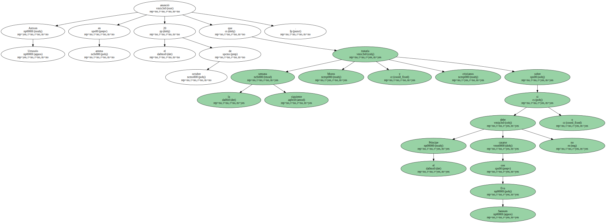
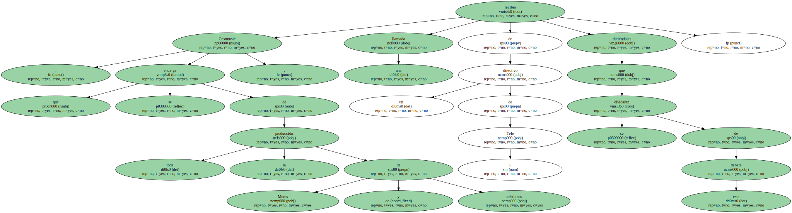
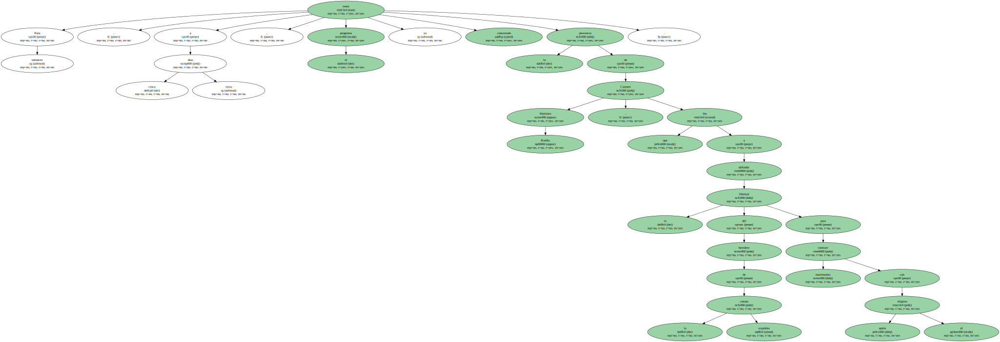
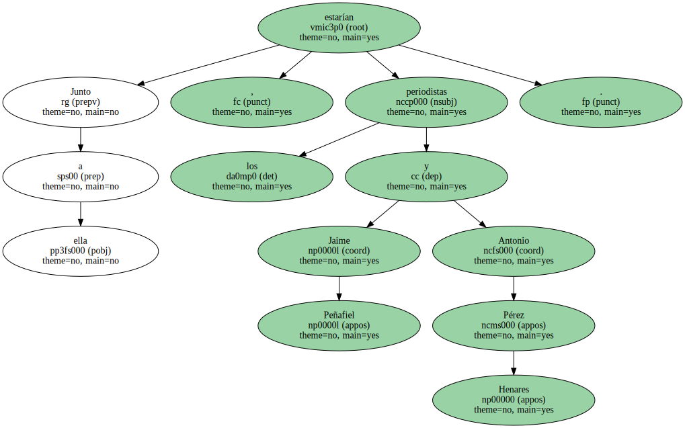
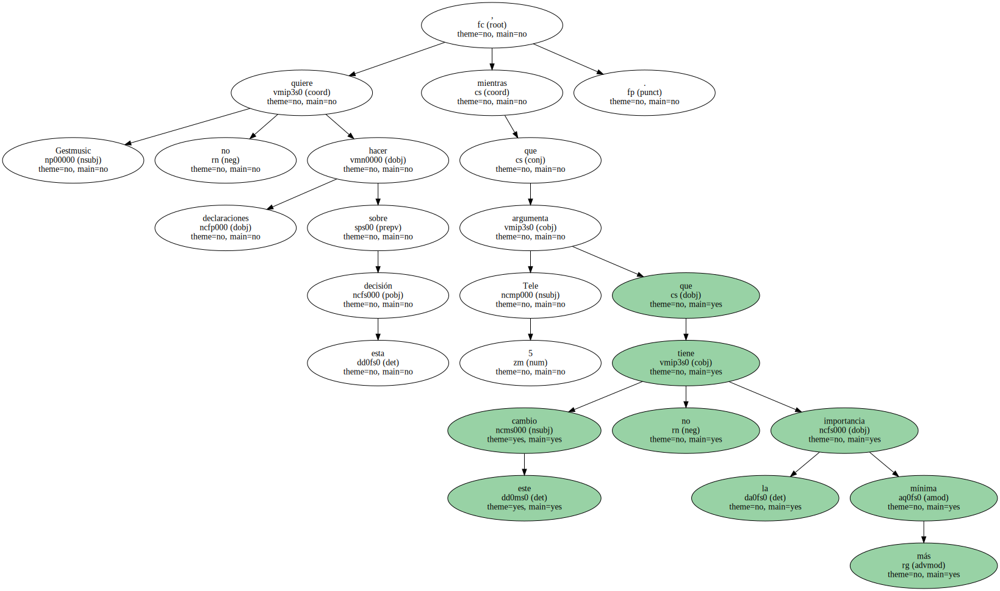
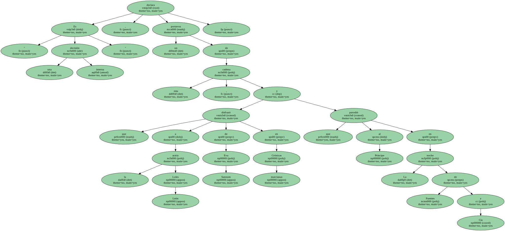

Antxon Urrusolo anunció en antena el 20 de octubre que la siguiente semana Moros y cristianos trataría sobre si el Príncipe debe casarse o no con Eva Sannum.
Tele 5 decidió , al cabo de dos días , cancelar este debate por " criterios de programación " , y cambiarlo por otro enunciado menos comprometido : El sexo con amor , sí o no.

Gestmusic , que se encarga de toda la producción de Moros y cristianos , recibió una llamada de un directivo de Tele 5 diciéndoles que se olvidaran de este debate.
Para entonces , a cinco días vista , el programa ya tenía concertada la presencia de Carmen Martínez Bordiu , que iba a defender la libertad del heredero de la corona española para contraer matrimonio con quién él eligiera.
Junto a ella , estarían los periodistas Jaime Peñafiel y Antonio Pérez Henares.
Gestmusic no quiere hacer declaraciones sobre esta decisión , mientras que Tele 5 argumenta que este cambio no tiene la más mínima importancia.
" Es una decisión interna " , declara un portavoz de esta cadena , que disfrazó a la actriz Loles León de Eva Sannum en Crónicas marcianas y que parodió al Príncipe en La noche de Fuentes y Cía.
